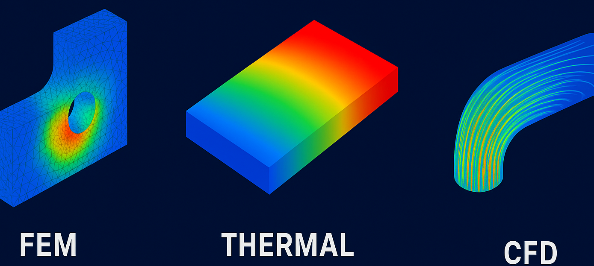

Articles · Reflections · Experience
Newsletter
Longer-form articles about aerospace engineering, simulation work, and lessons from the field.
Sep. 2025
What to expect as a simulations engineer?
Have you ever wondered what being a simulations engineer is really like? Passionate about CFD, thermal analyses, or structural problems? This article shares 11 months of hands-on experience across three simulation disciplines, revealing what the job looks and feels like from the inside.

READ ARTICLE →